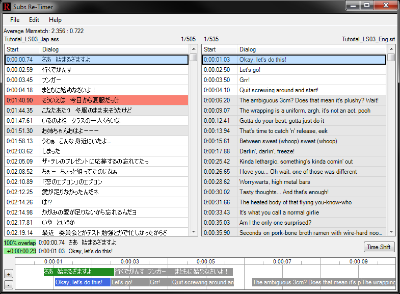
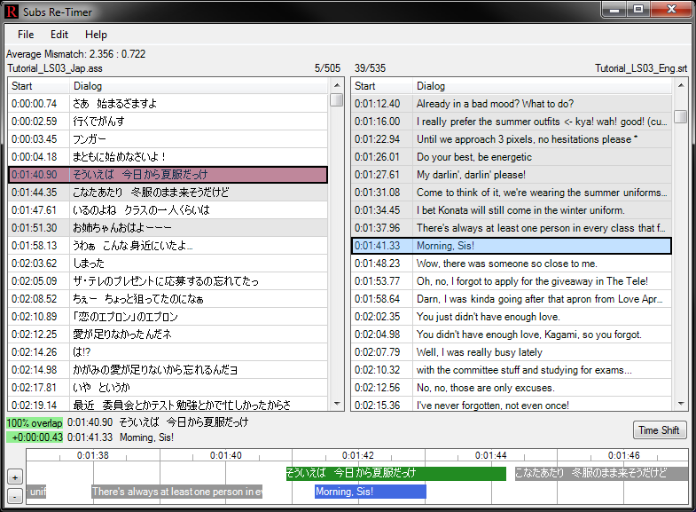
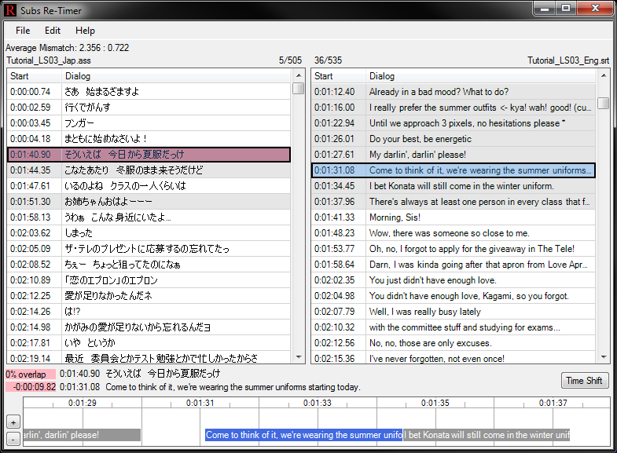
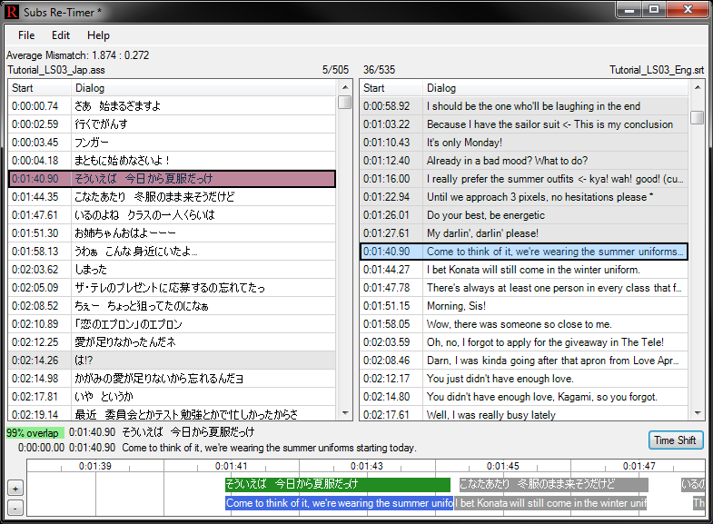
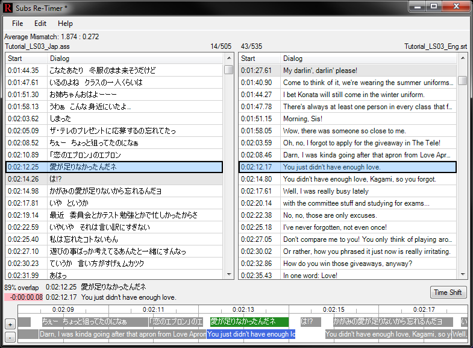
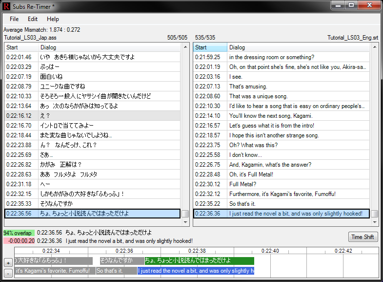

Use this tool to re-time a subtitle file based on the timings of another subtitle file. This is helpful when one is already synced to a video but the other is not.
Note: This is not a general subtitle timing tool like Aegisub and cannot be used to create subtitles from scratch. It is useful in the very specific case where you already have a subtitle file that is timed to a video and you want to match another subtitle file's timings to it.
Screenshot:

To begin, drag a .srt or .ass subtitle file into the left or right subtitle box or use the use the 'File | Open Left/Right...' menu options.
The left subtitle box should contain the subtitle file that is already timed.
The right subtitle box should contain the subtitle file that needs to be re-timed.
Subs Re-Timer has only one operation: Time Shift. To shift timings, select a line in the right subtitle box and it's corresponding line in the left subtitle box. Now press the "Time Shift" button. This will shift all subtitle timings in the right subtitle box from the selected line onwards by the time difference between the selected line in the left subtitle box and the selected line in the right subtitle box.
Lines of dialog right after a large time gap (28 seconds) are colored orange. These gaps usually represent opening/ending credits or commercials that were subbed in one file but not the other. The timings for these lines (and everything below) usually need to be shifted.
Always go from top to bottom. Usually, time shifting only needs to be performed on orange lines. Typically, 1-4 time shifts will be necassary for the two subtiles to match one another.
Row Colors:
| Color | Description |
|---|---|
| White | Normal. |
| Orange | Line of dialog right after a large time gap (28 seconds). These gaps usually represent opening/ending credits or commercials that were subbed in one file but not the other. The timings for these lines (and everything below) usually need to be shifted. |
| Gray | Line of dialog whose timings don't appear to match any of the timings in the other subtitle box. |
Shortcuts:
| Shortcut | Description |
|---|---|
| (Subtitle Box) Right-Click | Select line and closest line from other subtitle box. |
| (Subtitle Box) Middle-Click | Shift all timings in the right subtitle box from the selected line onwards by the time difference between the selected line in the left subtitle box and the selected line in the right subtitle box. |
| (Subtitle Box) Double-Click | Find the next orange line. |
| (Subtitle Box) Left | Select previous line and closest line from other subtitle box. |
| (Subtitle Box) Right | Select next line and closest line from other subtitle box. |
| (Subtitle Box) Ctrl+Left | Select the left subtitle box. |
| (Subtitle Box) Ctrl+Right | Select the right subtitle box. |
| (Subtitle Box) Ctrl+Up | Find the previous orange line. |
| (Subtitle Box) Ctrl+Down | Find the next orange line. |
| (Subtitle Box) Enter | Shift all timings in the right subtitle box from the selected line onwards by the time difference between the selected line in the left subtitle box and the selected line in the right subtitle box. |
| (Chart) Left-Click | Select next line in right subtitle box and closet line from left subtitle box. |
| (Chart) Right-Click | Select previous line in right subtitle box and closet line from left subtitle box. |
| (Global) Ctrl+Z | Undo previous time shift. |
| (Global) Ctrl+Y | Redo previous time shift. |
| (Global) Ctrl+O | Select subtitle file for left subtitle box. |
| (Global) Ctrl+Shift+O | Select subtitle file for right subtitle box. |
| (Global) Ctrl+S | Save re-timed subtitle file (appends "_retimed" to original subtitle file) |
| (Global) Ctrl+Shift+S | Select save path for re-timed subtitle file. |
| (+) Right-Click | Zoom-in by 10 seconds. |
| (+) Middle-Click | Zoom-in maximum amount. |
| (-) Right-Click | Zoom-out by 10 seconds. |
| (-) Middle-Click | Zoom-out maximum amount. |
Navigate to the "Tutorial_Files" folder in the Subs Re-Timer directory. Here we see 2 files. "Tutorial_LS03_Jap.ass" contains Japanese subtitles and is the file that is timed to the video. "Tutorial_LS03_Eng.srt" contains English subtitles and is the file that we want to re-time.
Drag "Tutorial_LS03_Jap.ass" to the left subtitle box. The left subtitle box should always contain the subtitles that are already timed.
Drag "Tutorial_LS03_Eng.ass" to the right subtitle box. The right subtitle box should always contain the subtitles need to be re-timed.
At this point, the interface should look like this:
As you can see in the chart at the bottom, the first 4 lines match each other pretty well. However, the 5th line doesn't match at all. This is evident by the gray coloring of the lines in the right subtitle box. The gray lines indicate that the timings do not seem to match any of the timings in the left subtitle box. It would appear that the Japanese version doesn't include subtitles for the opening music but the English subtitles do.
The orange line in the left subtitle box indicates that there exists a large timing gap (at least 28 seconds) between orange line and the previous line. Orange lines are usually the only ones that need our attention. In this example, there is only a single orange line and it is right in our view. Other subtitles may have many orange lines and they may be further down in the file. In these cases you can manually scroll down and look for them or you may double-click a line or press Ctrl-Down to automatically move to the next orange line.
Go ahead and right-click (not left-click) the orange line. Right-clicking will both select the line that was clicked and also select the closest timed line in the other subtitle box.
The two selected lines in the above screenshot do not match. Find and left-click the matching line in the right subtitle box at 0:01:31.08 as shown here:
We will now shift all subtitle timings in the right subtitle box from the selected line onwards by the time difference between the selected line in the left subtitle box and the selected line in the right subtitle box. Do this now by pressing the "Time Shift" button or Middle-clicking or pressing Enter. The result:
In the above screenshot, notice that both lines in the bottom chart now start at the same time. Also notice that the "Average Mismatch" statistic in the top-left went from "2.356 : 0.722" to "1.874 : 0.272". The "1.874" represents the average mismatch of all lines (in seconds) and the "0.272" is the average mismatch of only the non-gray lines (in seconds). The first number is pretty high because these 2 subtitle files have a different number of lines. In the top-middle, you can see that the left file has 505 total lines whereas the right file has 535 total lines.
The next screenshot shows another example of a gray line (notice how the 「は！？」 in the Japanese version was not translated in the English version):
Is it helpful to spot check the timings near the middle and end. The next screenshot shows that the timings still match up pretty well at the end:
We can see that the final line still has a 94% overlap which is probably acceptable for watching and more than acceptable for use with subs2srs.
You can go ahead and save the file now. You're done.
Menu
File | Open Left...:
Open file that will go into the left subtitle box.
File | Open Right...:
Open file that will go into the right subtitle box.
File | Save Right (original preserved):
Save the subtitle file in the right subtitle box by adding "_retimed" to the end of the original file's name. The original file will be unmodified.
File | Save Right As...:
Choose a location and save the subtitle file in the right subtitle box.
File | Exit:
Exit Subs Re-Timer.
Edit | Undo:
Undo the last time shift.
Edit | Redo:
Redo the last time shift.
Edit | Time Shift:
Shift all subtitle timings in the right subtitle box from the selected line onwards by the time difference between the selected line in the left subtitle box and the selected line in the right subtitle box.
Help | Usage:
Show this file
Help | About:
Display information about Subs Re-Timer.
Average Mismatch: The number to the left of the colon represents the average mismatch of all lines (in seconds) between the two subtitle files. The number to the right of the colon represents the average mismatch of only the non-gray lines (in seconds) between the two subtitle files. The number on the left is usually higher because the two subtitles files will often have a different number of lines. Generally, the number on the right is a more useful statistic.
Filename: The filename of the subtitle file shown in subtitle box below. There are two of these: one for each subtitle file.
Selected Line Number / Total Number of Lines: The number to the left of the slash is the currently selected line. The number to the right of the slash is the total number of lines in the subtitle file. There are two of these: one for each subtitle file.
Subtitle Box: Contains the start time and text of each line of dialog in the subtitle file. The format of the start time: "Hours:Minutes:Seconds.Centiseconds". Line colors and shortcuts are described in the General Usage section. There are two of these: one for each subtitle file.
Line Statistics: The top statistic is the amount that the selected line in the left subtitle box overlaps the line in the right subtitle box. A high overlap is a good indicator that the two lines share similar timings. The overlap will be painted green when the overlap is greater than 90% and will be painted pink when the overlap is 0%. The bottom statistic is the start time difference (+ or -) between the selected line in the left subtitle box and the selected line in the right subtitle box. The start time difference will be painted green when the left starts before the right and will be painted pink when the left starts after the right.
Start Times: The time on the top is the start time of the selected line in the left subtitle box. The time on the bottom is the start time of the selected line in the right subtitle box.
Dialog Text: The top line shows the text of the selected line in the left subtitle box. The bottom line shows the text of the selected line in the right subtitle box.
Time Shift: Shift all subtitle timings in the right subtitle box from the selected line onwards by the time difference between the selected line in the left subtitle box and the selected line in the right subtitle box.
Chart Scale: The "+" button zooms the chart in. The "-" button zooms the chart out. Right-click the buttons to zoom in/out by 10 seconds. Middle-click to zoom in/out to the maximum amount.
Subtitle Chart: Shows the subtitle lines on a time scale. This can be used to visually see timing differences between lines in the left subtitle box and lines in the right subtitle box. The timeline is shown at the very top of the chart. The upper portion of the chart shows the lines from the left subtitle box and the lower portion shows the lines from the right subtitle box. The currently selected line in the left subtitle box is painted green and the currently selected line in the right subtitle box is painted blue. Left-click the chart to select the next line in the right subtitle box and the closest match in the left subtitle box. Right-click the chart to select the previous line in the right subtitle box and the closest match in the left subtitle box.